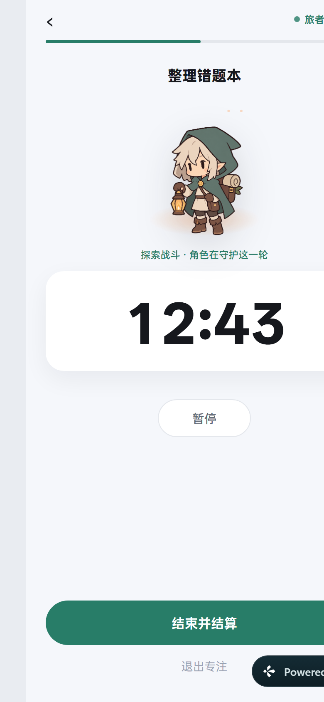

CINIS.
A gamified self-discipline product that turns habit-building into a role-playing journey — three modes, a soul-flame growth system, and a fully interactive hi-fi prototype.
Overview
01CINIS reframes discipline as narrative. Users commit to daily tasks, accumulate 魂火 (soul-flame), and face staged consequences across three distinct modes — making consistency feel like a story worth continuing rather than a streak to protect.
Background & Problem
02Most habit apps optimise for streaks and guilt: miss a day and the number resets, the motivation dies. The design problem was to build consequence without shame — a system where failure is a chapter, not an ending.
Design rationale drawn from the prototype. Verified research data and outcome metrics are TODO — none are fabricated.
Three-Mode Mechanism
03 · 旅者 / 骑士 / 深渊No threshold
Forgiving onboarding; failure restarts from a small flame. For building the first habit.

Covenant, recoverable
Commitment with a reclaimable stake — tension without despair.

Contract broken
High reward, harsh reset. The gamble that makes each day matter.

Each mode owns an independent failure branch — structure and visuals differ, not just colour.
Soulflame Growth System
04
Soul-flame (魂火) is the core currency: it rises with completed tasks, powers stages, and visualises momentum. Milestone stones mark each stage — progress you can literally see on the path.
Information Architecture
05Four top-level tabs, each owning a focused sub-tree. The structure keeps a single "today" entry point while letting goals, growth and settings live one level down.
今日 · Today
- 今日任务
- 完成方式弹层
- 专注计时
- 任务完成反馈
- 阶段结算
目标 · Goals
- 目标列表
- 新建目标
- 目标详情
- 编辑目标
成长 · Growth
- 个人成长
- 角色档案
- 成就墙
我的 · Me
- 历史记录
- 提醒设置
- 数据与隐私
User Flow
06The core loop: onboarding → today → choose completion mode → focus → feedback → stage settle, with three distinct failure branches.
Interaction Logic
07「换模式」cycles 旅者 → 骑士 → 深渊; card colour, accent, soul-flame cap, thresholds, character art, task count and copy all switch together.
Real setInterval countdown; pause / resume works — not a static mock.
Tap toggles done state, strike-through, progress bar and "已完成 N 项" stay in sync.
完成方式 uses a bottom drawer rise + backdrop; two options selectable.
Bottom nav indicator translates with translate3d + cubic-bezier(.22,1,.36,1) 380ms, transform-only for 60fps.
Page fade 220ms; dark system pages drop the nav shell.
UI Design System
08Sourced from the real Figma spec (not estimated): a light base with a strong orange primary, plus a dedicated dark theme per mode.
Core palette
Mode themes (dark cards)
Type & shape
Typeface: OPPO Sans 4.0 (product UI) · scale 10 / 12 / 14 / 15 / 16 / 20 / 26 / 28 · radius chip 9 · card 16 · nav 35 · pill 999 · canvas 390 × 844, pad 24, nav 70.
High-Fidelity Screens
09 · Real capturesRather than shrinking every screen into one grid, key screens are shown large with detail zooms and captions explaining the design decision behind each.
 Detail — soul-flame meter & mode
Detail — soul-flame meter & mode




Screens are real captures of the live CINIS prototype — not mock-ups.
Prototype
10 · LiveTry the real prototype
23 screens · 3 modes · real countdown · fully clickable in a phone browser. The prototype stays reachable here even after CINIS becomes a case study.
https://cinis.netlify.app
If the embedded prototype is blocked by the host (some environments block cross-origin frames), use the external demo link — it always opens the full prototype. Mobile: open the demo link directly for the intended phone experience.
Reflection
11CINIS demonstrates end-to-end product thinking: a clear positioning, a three-mode mechanic with real consequence design, a coherent growth system, and a full hi-fi interaction prototype.
Progress you can see — and consequences you can feel.
Outcome metrics and user-testing results: TODO — intentionally not invented.